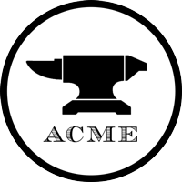

ACME Corporation
12:30
- InfoSec has gone through IDS alerts, NetFlow records, and searched through logs, however nothing was out of the ordinary except for two things.
- One of the employee's laptops show abnormally high amount of outbound traffic to various social media accounts via NetFlow records. The time of these logs indicate that they were at the Columbus branch office and were directly connected to ACME's network.
- SIEM alerts for malware outbreak, which is potentially affecting the availability of Customer Facing Website, users can not login to acme.com.
- Confirmed that core backend technology is down, and is not repairable for the foreseeable future.
- What actions did you take?
- What core infoSec principles are being affected (CIA)?
- What other teams do you get involved at this point?
- What do you do next?

Next Slide